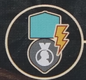
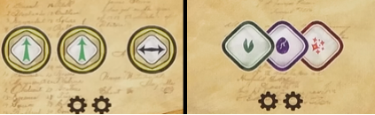
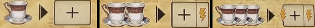

Note
We are members of a psychological society started by Sigmund Freud devoted to psychoanalysis (or study of the unconscious mind).
As members of this society, we aim to come up with new therapeutic techniques, grow our clientele, and become Freud’s most distinguished contemporary. To do this we will discuss ideas with peers, compile notes, and publish theory. To do all this we’ll also need a lot of coffee
The game is played over a number of rounds until Freud's reputation marker moves onto the end of the reputation track, triggering the end of the game. On your turn, you will choose one of 3 options: - State Ideas - Recall Ideas - Treat Clients
General Concepts
INSIGHT
Each player has a large wheel to track their insight. The wheel has different wedges for the differet insight qualities, as well as different rings for the insight levels.
There is a center reserve, where generated insight is pulled from. While in the reserve, insight has no quality or level. You will start the game with only white insight, but can add ones of your player color throught the game.
To generate insight (gesture to symbol), move from your reserve to the cooresponding area. If none in reserve, you can pull any insight of board to use to generate the new one instead.
Effects that look like arrows will let you move insight, or change levels. When increasing level, you can't go from 0 to 1. When decreasing level, you can go from 1 to 0.
To pay insight, move it from the idicated area to your reserve. You can always use a higher level insight of the same quality to pay for a cost. So you could pay a minor insight by using a median insight of the same color.
There are generic colorless insight shapes that refer to any insight of the depicted level. There is a spot on your playerboard where you can trade a minor, median, and major insight for a heart shaped box.
REPUTATION
On the city board is a reputation track that does two different things. Any time a player one goes up, so does Freud’s. Him reaching the pocketwatch triggers the end of the game. Finish out round + one more. Gaining reputation advances the clock of the game, no matter who does it.
When you gen a reputation (looks like a medal), first move Freud’s marker and then yours. If any marker crosses a line with the little face on the track, this make’s Freud’s meeple move locations, and this can happen multiple times in a turn.

This icon triggers the reputation track. When this happens you score points/coffee show at the zone above the track in the section where your marker is.Then look at the zone below the track. You can perform any one action from Freud’s section or lower.
Note
Just remember, gaining reputation and triggering the reputation track are different things.
RESOURCES
Two major resources on playerboard. Heart shaped boxes are mainly used to cure clients. Conversions in middle of board. Coffee is used for a lot, there are conversions in the bottom left of the playerboard. When you would downgrade and insight, you can pay a coffee to ignore it. You can pay 2 coffee to level up an insight or change it’s color. Coffee can also be used to gain a bright idea token, which we’ll talk about more.
# Major Actions On your turn, you can do one of three options. The first is to state ideas. This is how you take the main actions in the game
## State Ideas Ideas are the little speech bubbles in the bottom left of your playerboard. To perform this action you will grab 1 or 2 ideas and place them onto an empty idea space on the meeting table, pointing the tail at the action you want to perform. Placing one idea lets you do the action once, 2 ideas lets you do it twice. You can’t point the tails at an action that you have other ideas pointing at already.
You can substitute a bright idea for an idea token. You could even use 2 bright ideas and no idea token. These will go back to the supply at end of turn, where normal ideas stay on the meeting table. After performing your actions, you advance your inkpot
### INKPOT Your inkpot will move clockwise along it’s track equal to the value shown on the row of the meeting board where you took your action, performing the inkpot effect where it ends movement. Bottom left of playerboard reminds you that for each bright idea token spent, you can modify this moevent +/- 1, down to a minimum of one. - Three spaces aligned with insight will generate the insight shown, and then resolve the effects of every notebook tile in that row in any order. If the token has been removed from the end of the row, you will get the effect shown there too. - Space on the left activates reputation track (not gain rep) - Top space of the 4 stack has you pick a column with no idea above it, and then resolve every notebook tile in that column. If the token has been removed from below the column, get the effect show there as well. - When you move your inkpot over the printed gain idea symbol, remove the leftmost idea token and add it to your reserve
Meeting Table Actions

- Left lets you perform 2 elevations and 1 transfer (in any order) - Right lets you generate one minor insight of each quality
Pay coffee to gain notebook tiles - Left: Grab the tile from above the column - Mid:Heading
- Bullet point
- Bullet point
- Bullet point
Smaller Heading
- numbered list iten
- numbered list item
- numbered list item